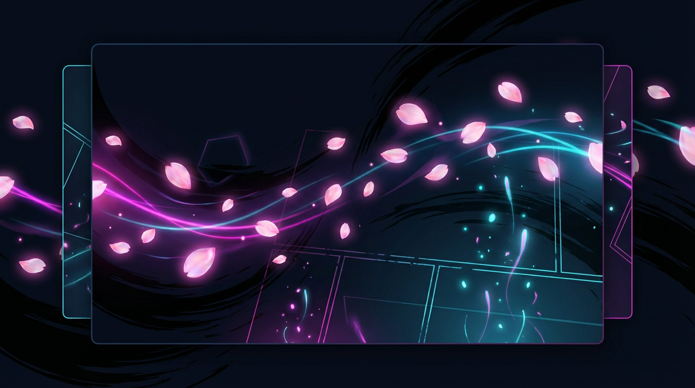
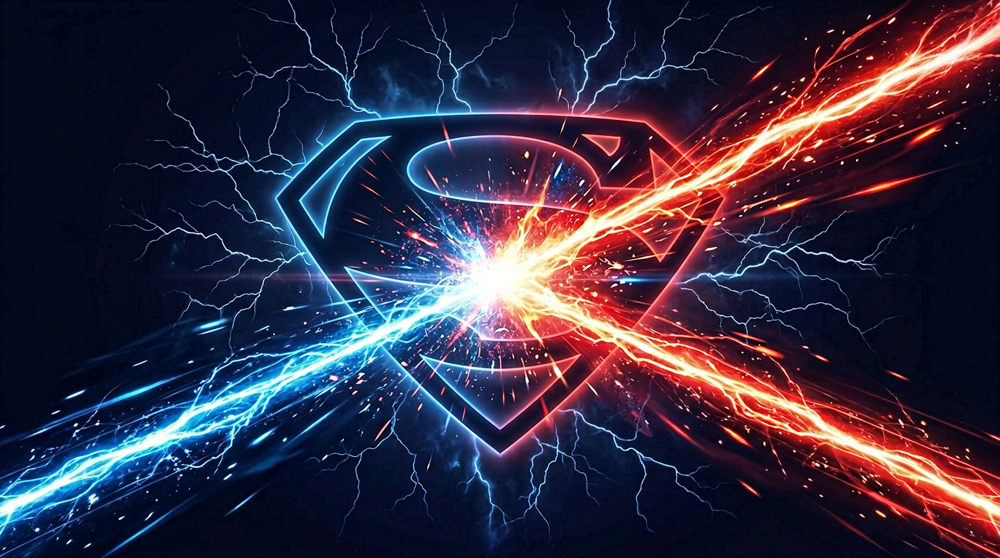
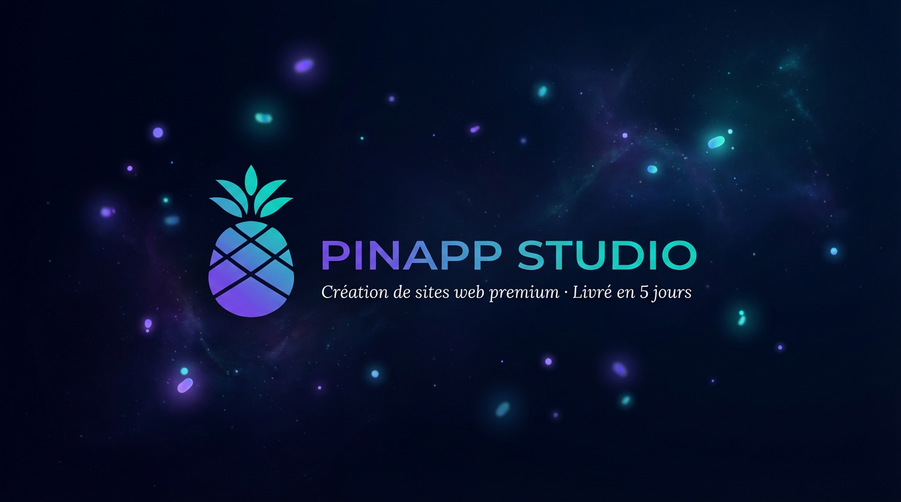
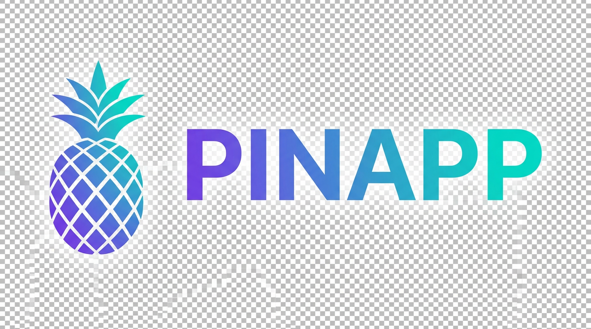

Tatouage · Lyon Croix-Rousse
Nocturna Ink
Là où la peau devient histoire — pièces sur mesure, ambiance feutrée, réservation guidée. Un exemple de site original pour tatoueuse indépendante.
Galerie type scénario
Visuels locaux (dossier assets/images) pour cette présentation — sur un site livré, ce sont vos
clichés et votre direction artistique, avec la même finition.




Avant l’aiguille
Parcours type réel — formulaire, brief visuel, validation du croquis.
01
Brief créatif
Zone du corps, taille, références visuelles — vous déposez tout en ligne. Je reviens avec une direction claire.
02
Croquis & ajustements
Un rendu propre avant la séance. On affine jusqu’à ce que le motif vous ressemble à 100 %.
03
Séance & suivi
Hygiène studio, pause si besoin, consignes de soin — et un check-in J+7 pour la cicatrisation.
Nocturna Ink : scénario de présentation — vitrine réalisée par Pinapp Studio, même niveau d’exigence qu’un projet signature. Aucun rendez-vous ne part depuis cette page.